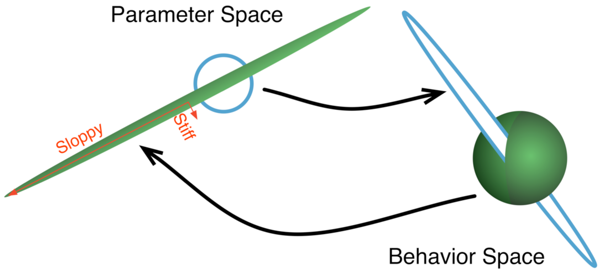

Dealings with Data
Physics, Machine Learning, and Geometry
Outline
- ML: Unsupervised Analysis of Stock Returns
- ML: Model Manifold of Neural Networks
- Non-Linear Scaling of the 2D NE-RFIM
Unsupervised Machine Learning Anaylsis of US Stock Markets
Archetypal Analysis
$ R_{ts} \sim E_{tf}W_{fs} $ where $E_{tf} = R_{ts'}C_{s'f}$ $$ C_{s'f} \geq 0, \Sigma_{s'}C_{s'f}=1 $$ $$ W_{fs} \geq 0, \Sigma_{f} W_{fs} = 1 $$
| Canonical Sector | Business Lines | Prototypical Examples |
| c-cyclical | general and specialty retail discretionary goods |
Gap, Macy's, Target |
| c-energy | oil and gas services, equipment, operations |
Halliburton, Schlumberger |
| c-financial | banks insurance (except health) |
US Bancorp., Bank of America |
| c-industrial | capital goods, basic materials, transport |
Kennametal, Regal-Beloit |
| c-non-cyclical | consumer staples, healthcare | Pepsi, Procter & Gamble |
| c-real estate | realty investments and operations | Post Properties, Duke Realty |
| c-technology | semiconductors, computers, communication devices |
Cisco, Texas Instruments |
| c-utility | electric and gas suppliers | Duke Energy, Wisconsin Energy |

Dimensionality

Dimensionality

Dimensionality
$||E_{tf}-E_{tf'}S_{f'f}||_F^2$
$\Sigma_{f'}S_{f'f}=1$
Coefficient of Determination
$r^2 = 1-SSE/SST$
$SSE = ||R-EW||_F^2\quad$ and $\quad SST = ||R||_F^2$
| 8 (3) Factor AA |
Fama and French |
|
|---|---|---|
| Normalized Data |
11.1% (5.61%) | 4.75% |
| S&P 500 | 93.5% | 99.4% |
| Equal Weighted S&P |
99.0% (97%) |
95.8% |
Archetypal Analysis provides factors (sector time series) which are competitive with standard benchmark factor models in finance.
The factors obtained via AA are conceptually rich and provide a principled means to analyze company exposure and create sector specific indices
Neural Networks through the lens of Manifold Learning
Why does Science Work?
Hyper-ribbons
Hyper-ribbons
Hyper-ribbons

A Systems Biology Example

A Systems Biology Example
Motivation
Neural network with N-1 neurons performs almost as well as network with N neurons (suggests Nth dimension thin)
Is it possible to evaporate neurons in the same way as in the systems biology network?
Can the manifold provide insight for generating new ML architectures?

Jeffrey's Prior
$$ H\approx\sum_k\bigg{(}\frac{\partial y_k^\theta}{\partial\theta_i}\frac{\partial y_k^\theta}{\partial\theta_j}\bigg{)}=J^TJ$$
$$ p(\theta)=\sqrt{|g_{\alpha\beta}|}=\sqrt{|J^TJ|}=\prod_i \Sigma_i $$
emcee: the MCMC Hammer
Manifold Widths
Single Digit Network
Boundary Relationship
N-1 and N-dimensional descriptions have a boundary relationship: $M_{N−1} \approx \partial M_{N}$
Boundary Relationship

Boundary Relationship
Transtrum et. al. has explored the relationship between manifold boundaries and emergent model classes
Paradox
For a hyper-ball 95.8 % of the the volume is within 10% of the surface.
Conversely, for a 10-D sphere with radius 1 and cap height 0.1, the volume of the cap corresponds to a tiny 0.0014%
Jeffrey's Prior $\rightarrow$ Generative Model (e.g. VAE)


Curse of Dimensionality

InPCA: Katherine Quinn et. al.
The geometry of a model manifold can inform approaches to model simplification and reduction
Computational Neural Networks display a unique manifold geometry
Weird scaling for 2-D avalanches:
Curing the faceting, and scaling in the lower critical dimension
Square Lattice

Voronoi Lattice

Power Law Scaling is Insufficient
Eduard Vives, Jürgen Goicoechea, Jordi Ortín, and Antoni Planes: 1995
$r_c=0.75\pm0.03$, $\ L=100$Djordje Spasojević, Sanja Janićević, and Milan Knežević: 2011
$r_c=0.54\pm0.02$, $\ L=131,072$,collapse over range of $r\sim10\%$
Power Law Scaling assumes a hyperbolic fixed point in the Renormalization Group flows
Power Law Scaling
$A(s|w) = s^{-1}\mathcal{A}(s/w^{-1/\sigma})$
$\frac{dM}{dh}(h|w) = w^{\beta-\beta\delta} \frac{d\mathcal{M}}{dh}((h-h_c)/w^{\beta\delta})$
Lower Critical Dimension
$A(s|w) = s^{-1}\mathcal{A}(s/\Sigma(w))$
$\frac{dM}{dh}(h|w) = \eta(w)^{-1}\frac{d\mathcal{M}}{dh}((h-h_{max})/\eta(w))$
Normal Form Theory
$\frac{dw}{dl} = a w^2 + b w^3 + c w^4 + \cdots$
$\frac{dw}{dl} = w^2 + B w^3$
| Power Law Scaling | Lower Critical Dimension | |
|---|---|---|
| $\frac{dw}{d\ell}$ | $-\nu w\ +\ ...$ | $w^2+Bw^3$ |
| $\xi(w)$ | $(\frac{1}{w})^\nu$ | $(\frac{1}{w}+B)^{-B}exp(\frac{1}{w})$ |
| $\frac{ds}{dl}$ | $-\frac{1}{\sigma\nu}s$ | $-d_f s - C s w$ |
| $\frac{dh}{dl}$ | $\frac{\beta\delta}{\nu} h$ | $\lambda_h h + F h w$ |
Equilibrium
Bray and Moore, 1985: $\frac{dw}{d\ell}=\epsilon w+A w^3+\cdots$Normal Form: $\frac{dw}{d\ell}=w^3+Dw^5$
$\xi\sim e^{1/2w^2}(w^2)^{-D/2}$
Meinke and Middleton, 2005: $D=2.14$


Collapsing the 2D Avalanche Model
- Faceting issues may be addressed
by running simulations on a Voronoi lattice - A bifurcation in the RG flows explains
difficulty with power law scaling - Numerical results consistent with
a lcd equal to two and $r_c=0$
Thank You |
||||
|
Ricky Chacra Lyft |
Alex Alemi Google AI |
Paul Ginsparg Cornell |
James Sethna Cornell |
Archishman Raju Rockefeller |